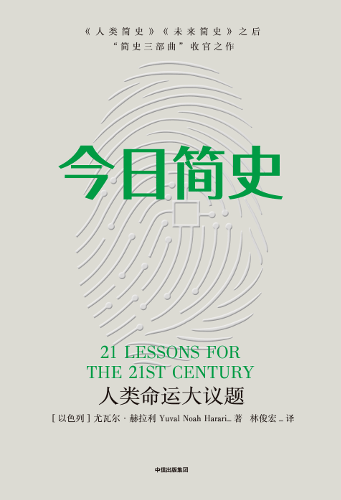

📖《今日简史》是赫拉利"简史三部曲"的收官之作，聚焦当下人类面临的21个重大议题。从人工智能与数据霸权，到民族主义与移民危机，再到战争与谦逊，赫拉利以他一贯的犀利视角剖析时代困境。
不同于前两部作品的宏大叙事，这本书更关注具体议题，是理解当代世界的重要参考。
相比于前两部的宏大视角，这本书更接地气，聚焦于当下我们正在经历的变革与挑战。21个议题覆盖了技术挑战、政治困境、真相与迷茫、生存意义等多个维度。
让我印象最深的是关于"谦逊"的讨论。赫拉利指出，人类最大的问题不是无知，而是傲慢。我们以为自己掌控了一切，却忘了人类在宇宙中的渺小。无论科技多么发达，人类依然只是演化链上的一环，而不是终点。
书中关于教育的观点也发人深省。在信息爆炸的时代，获取知识已经不是问题，问题是如何分辨真假、如何理解意义、如何不断重塑自我。未来的教育不应该是灌输知识，而是培养"认知弹性"——适应变化的能力。
相比前两部，这本书的冲击力略弱一些，但实用性更强。它提供了一把理解当代世界的钥匙，让我们在纷繁复杂的信息中找到思考的方向。三部曲读完，对人类的过去、现在、未来都有了全新的认知框架。